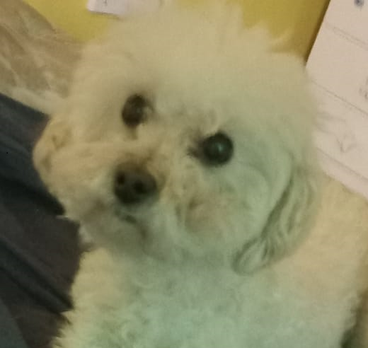
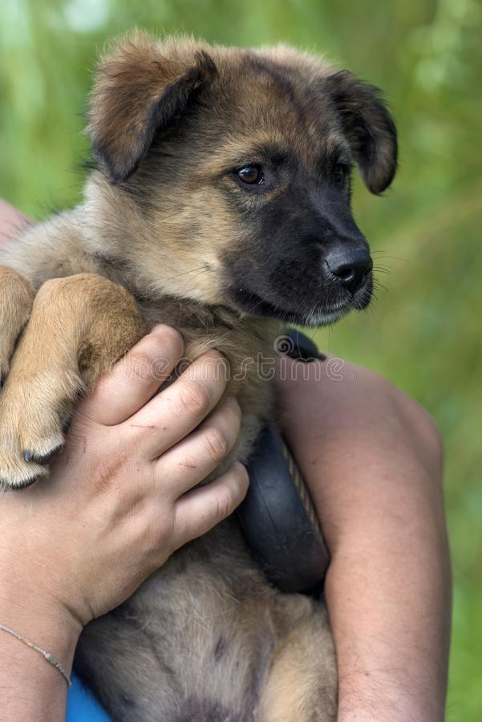

Adopciones disponibles

Caniche toy
Edad: 8 años
Nombre: Lola
Sexo: Hembra
Personalidad: Protectora y cariiñosa
Tamaño: Chica
Adoptar

Caniche
Edad: 10 años
Nombre: Chicho
Sexo: Macho
Personalidad: Miedoso, cariñoso, tranquilo
Tamaño: Mediano
Adoptar

Mestizo pastor
Edad: 3 meses
Nombre: Brownie
Sexo: Machi
Personalidad: Juguetón, cariñoso, sociable.
Tamaño: Mediano.
Adoptar

Poodle
Edad: 1 año y 2 meses
Nombre: Calvin
Sexo: Macho
Personalidad: Juguetón, amigable, cariñoso.
Tamaño: Chico/mediano
Adoptar

Viejo Pastor Inglés
Edad: 3 años
Nombre: Celeste
Sexo: Hembra
Personalidad: Muy cariñosa y sociable.
Tamaño: Grande.
Adoptar